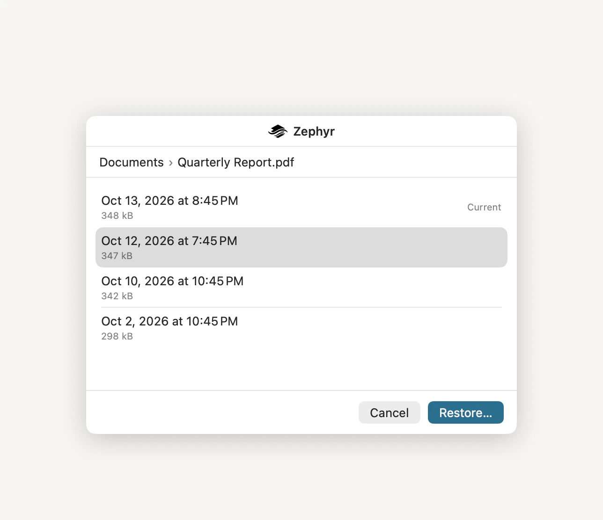

Dropbox conserve pendant un certain temps les versions antérieures d’un fichier après sa modification. Si vous avez enregistré quelque chose par erreur, ou si une app a mal écrasé un fichier, vous pouvez rétablir une version antérieure sans quitter le Finder.
Dans le Finder, cliquez sur le fichier en maintenant la touche Contrôle enfoncée.
Choisissez Show Previous Versions…

Chaque version est répertoriée avec la date à laquelle Dropbox l’a enregistrée et la taille qu’avait alors le fichier, de la plus récente à la plus ancienne. Celle que votre Mac contient actuellement porte la mention Actuelle.

Remarque : La commande n’est proposée que lorsqu’un seul élément est sélectionné, et uniquement pour un fichier : ni pour un dossier, ni pour deux fichiers à la fois, ni pour un élément dont vous avez arrêté la synchronisation. Avec toute autre sélection, elle ne figure tout simplement pas dans le menu.
Sélectionnez la version souhaitée. La plus récente qui n’est pas la version actuelle est déjà sélectionnée à l’ouverture de la fenêtre.
Cliquez sur Restaurer…, puis sur Restaurer pour confirmer.
Le fichier revient à l’état qu’il avait à cette version, sur Dropbox et sur tous les appareils connectés au même compte. Le Finder se met à jour un instant plus tard, une fois la modification revenue.
Remarque : C’est la seule action ici que vous ne pouvez pas annuler en la refaisant : le contenu actuel du fichier est remplacé. La version que vous avez remplacée est elle-même conservée comme version antérieure ; vous pouvez donc y revenir de la même manière.
Pour un fichier dont Dropbox n’a aucune version antérieure, c’est-à-dire un fichier que vous n’avez jamais modifié depuis son ajout, la fenêtre indique Dropbox n’a conservé aucune version antérieure de ce fichier. et le bouton du bas est Fermer au lieu d’Annuler.
Les versions suivent un fichier lorsqu’il est renommé ou déplacé ; un fichier que vous avez renommé affiche donc toujours ce qu’il était auparavant.
Remarque : La fenêtre affiche au maximum dix versions, et
il n’est pas possible d’aller au-delà. La durée de conservation par Dropbox dépend de votre offre Dropbox,
mais un fichier enregistré assez souvent aura épuisé ces dix versions en une journée. zephyr revs
remonte plus loin ; consultez Installer l’outil en ligne de commande zephyr.